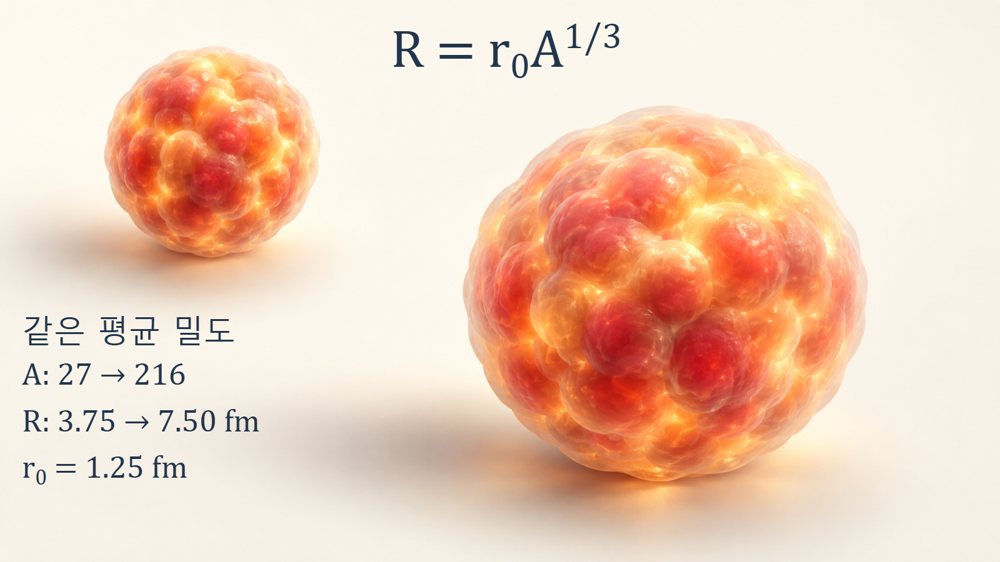
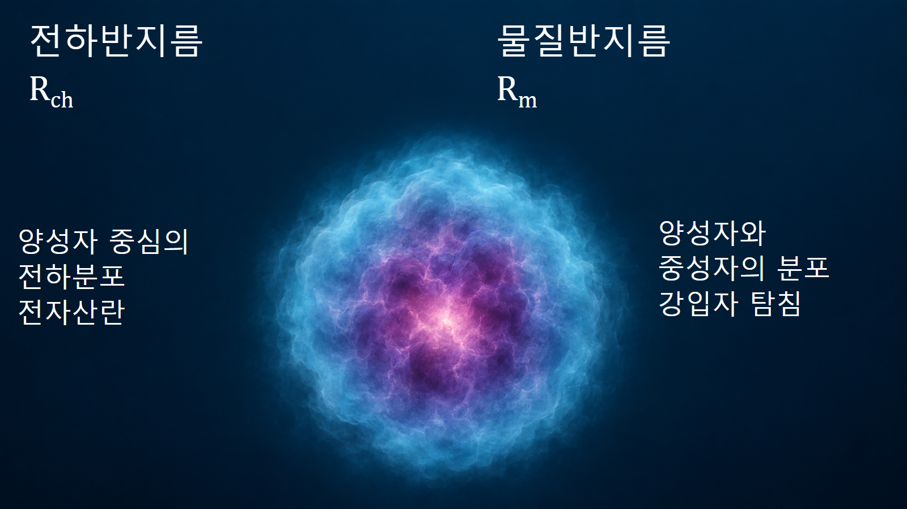

원자와 원자핵의 기초 · 009
원자핵 반지름
핵자 수에 따라 완만하게 커지는 핵의 크기
원자핵의 대표 반지름은 R=r₀A1/3으로 근사합니다. 부피가 질량수 A에 비례한다는 경험적 관계이며, 대부분의 핵에서 평균 핵물질 밀도가 비슷하다는 뜻을 담고 있습니다.
단단한 경계가 아닌 분포의 크기
원자핵은 표면이 선명한 고체 구가 아니라 양성자와 중성자의 양자적 밀도분포입니다. 중심에서는 밀도가 거의 일정하지만 표면 부근에서는 점차 감소합니다. 따라서 반지름은 측정한 분포를 어떤 기준으로 요약하는지에 따라 전하반지름, 물질반지름과 유효반지름으로 구분됩니다. 교육용 구 모형의 외곽선을 실제 경계로 해석해서는 안 됩니다.
세제곱근 법칙과 핵물질 밀도
구형 근사에서 부피는 V=4πR3/3입니다. R=r₀A1/3을 대입하면 V∝A가 되므로 핵자수/부피로 정의한 평균 핵물질 밀도는 A가 달라도 대체로 일정합니다. A가 8배가 되면 반지름은 2배, 부피는 8배가 됩니다. 핵자가 늘어날수록 서로 멀리 흩어지는 것이 아니라 비슷한 밀도로 더 큰 부피를 채운다는 뜻입니다.

칼슘-40과 우라늄-238의 모형 계산
계수 r0=1.25 fm를 적용하면 칼슘-40은 R≈1.25×401/3=4.27 fm, 우라늄-238은 R≈1.25×2381/3=7.75 fm입니다. [1] 질량수는 5.95배이지만 반지름은 약 1.81배입니다. 두 값은 경험식의 모형 계산값이며 정밀하게 측정된 전하반지름이 아닙니다. 자료마다 사용하는 계수와 반지름 정의가 달라질 수 있으므로 숫자만 비교하지 않습니다. 1 fm는 10−15 m입니다.
반지름의 종류와 측정 민감도
전자산란은 전하를 가진 양성자 분포에 민감하므로 전하반지름을 제공합니다. 강입자 산란과 상호작용 단면적은 양성자와 중성자를 포함한 물질분포에 민감합니다. 중성자가 많은 핵에서는 중성자 분포가 양성자 분포보다 바깥으로 확장된 중성자 피부가 나타날 수 있습니다. 같은 핵종의 반지름 값이라도 사용한 탐침, 모형과 보고된 반지름 정의를 함께 확인해야 합니다. 일반적인 전자산란의 전하분포 측정과 달리, 편극 전자의 패리티 비보존 효과를 이용하면 약한 상호작용을 통해 중성자 분포를 조사할 수도 있습니다. 따라서 탐침 이름만으로 모든 실험이 같은 분포를 측정한다고 단정하지 않습니다.

구형 근사가 제한되는 경우
가벼운 핵, 들뜬상태, 약하게 결합된 헤일로핵과 변형핵에서는 단순한 구형 반지름식의 오차가 커질 수 있습니다. 길쭉한 변형핵은 방향에 따라 크기가 다르며 회전상태와 전이확률에도 그 구조가 반영됩니다. R=r₀A1/3은 체계적인 평균 경향을 설명하는 경험식이지 모든 핵종의 정밀 치수를 보장하는 식이 아닙니다.
원자력공학에서의 활용 범위
핵반지름은 액적모형의 표면에너지와 쿨롱에너지, 핵분열 변형, 핵반응의 기하학적 규모를 이해하는 출발점입니다. 그러나 실제 반응단면적은 단순한 πR2만으로 결정되지 않고 중성자 에너지, 공명, 각운동량과 양자상태에 따라 달라집니다. 노심·차폐 계산에서는 반지름식 대신 평가된 에너지별 단면적을 사용하며, 반지름은 그 물리적 경향을 해석하는 보조 개념입니다. 핵분열에서는 원자핵이 늘어나 두 엽으로 변형될 때 표면적 증가와 쿨롱반발 감소가 경쟁합니다. 이때 반지름과 변형 개념은 핵분열장벽을 정성적으로 이해하게 하지만 실제 장벽 높이와 핵분열률은 핵종별 모형과 실험자료로 확인합니다.
계산과 자료의 검산
A는 무차원이고 r₀가 fm이므로 결과 단위는 fm이어야 합니다. 계산값이 수 fm 규모인지 확인하고 사용한 r₀와 반지름 정의를 기록합니다. 정밀값이 필요한 경우 실험으로 평가된 핵종별 자료를 사용합니다. 서로 다른 자료를 비교할 때에는 제곱평균제곱근 반지름인지 등가구 반지름인지 확인하고 측정방법과 불확실성을 함께 기록합니다.
| 검산 항목 | 확인 내용 |
|---|---|
| 차원 | A는 무차원, 결과는 fm |
| 규모 | 일반 핵은 수 fm |
| 적용성 | 변형·헤일로·들뜬상태 여부 |
핵심 정리
R=r₀A1/3은 핵의 평균 크기와 거의 일정한 핵물질 밀도를 연결합니다. 정밀한 해석에서는 전하반지름과 물질반지름, 표면 확산과 핵변형을 구분하고 핵종별 실험자료를 확인해야 합니다.